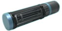

Equipment (LWOTC)

In Long War of the Chosen, soldier equipment has been changed from vanilla:
- Every soldier starts with 3 utility slots.
- Each item equipped reduces Mobility by 1.
- Starting items are unlimited and don't need to be purchased individually.
- Grenades do not have a limit per soldier, but they have a 1 turn cooldown after throwing one.
- Grenadiers have an extra slot for a grenade, that also reduces Mobility. They also do not have a cooldown for launching grenades.
Protective Gear
These items improve soldier's survivability through various means. Soldiers can only carry one Plating item and one Vest item at a time.
Plating
These items grant Ablative Health, which cannot be healed during a mission after being lost, but losing them does not count towards taking a wound and does not incur recovery time after the battle. A soldier can equip only one Plating at a time.
| Name |
Health Bonus |
Prerequisites |
Cost |
Black Market Value |
|
|---|---|---|---|---|---|
|
Alloys |
Corpses |
||||
|
Ceramic Plating |
+2 Ablative | XCOM starts with an unlimited supply | |||

Alloy Plating |
+3 Ablative | Alloy Plating | 1 | 1x ADVENT Trooper Corpse | 5 |

Chitin Plating |
+4 Ablative | Chitin Plating | 2 | 1x Chryssalid Corpse | 10 |

Carapace Plating |
+5 Ablative | Carapace Plating | 3 | 1x Muton Elite Corpse | 12 |
Vests
These items provide bonus Health and an additional perk. A soldier can equip only one Vest at a time.
| Name |
Health Bonus |
Special properties |
Prerequisites |
Cost |
Black Market Value |
|||
|---|---|---|---|---|---|---|---|---|
|
Supplies |
Alloys |
Elerium Crystals |
Corpses |
|||||

Nanoscale Vest |
2 | -10 chance to be critically hit | Hybrid Materials | 5 | 1 | 0 | - | 5 |

Hazmat Vest |
3 | Immunity to fire, acid and poison | Hazmat Vests | 15 | 1 | 0 | - | 5 |

Tactical Vest |
3 |
+1 Armor
-25 chance to be critically hit |
Tactical Vests | 20 | 2 | 0 | 1x Muton Corpse | 10 |
|
Stasis Vest |
5 | Restores 2 HP per turn, up to 8 total | Stasis Vests | 20 | 2 | 2 | 1x ADVENT Shieldbearer Corpse | 10 |

Hellweave Vest |
6 | Deals 2-4 damage and inflicts burning to melee attackers | Hellweave | 30 | 3 | 3 | 1x Berserker Corpse | 15 |
|
Chameleon Suit |
1 |
+5 Dodge
Reduces the soldier's infiltration time |
Chameleon Suits | 25 | 0 | 2 | 1x Faceless Corpse | 8 |
Grenades
Grenades can be carried by any class, but Grenadiers particularly excel with them: they can launch them with extended range and radius with their Grenade Launchers, they have an extra equipment slot that can only be used for a grenade, and they get perks to further increase their effectiveness.
| Name |
Damage |
Range |
Sound Range |
Radius |
Special properties |
Prerequisites |
Cost |
Black Market Value |
||||
|---|---|---|---|---|---|---|---|---|---|---|---|---|
|
Supplies |
Alloys |
Elerium Crystals |
Elerium Cores |
Corpses |
||||||||

Frag Grenade |
2-5 | 10 | 24 | 3 |
9 Environmental Damage
Shreds 1 Armor |
XCOM starts with an unlimited supply | ||||||
|
Plasma Grenade |
4-8 | 10 | 24 | 3 |
9 Environmental Damage
Shreds 2 Armor |
Plasma Grenades | 10 | 1 | 0 | 1 | - | 5 |

Shaped Charge |
- | 3 | 33 | 2 | 100 Environmental Damage | - | 10 | - | - | - | - | - |

Flashbang Grenade |
- | 12 | 9 | 5 | Disorients enemies | XCOM starts with an unlimited supply | ||||||

Smoke Grenade |
- | 15 | 9 | 5 | Grants +20 Defense and negates flanking bonuses while in smoke | XCOM starts with an unlimited supply | ||||||
|
Smoke Bomb |
- | 15 | 9 | 6 | Grants +20 Defense and negates flanking bonuses while in smoke | Smoke Bombs | 10 | - | - | - | - | 10 |
|
Battle Scanners |
- | 28 | - | 12 |
Detects enemies in an area
Reveals disguised Faceless and burrowed Chryssalids |
Battlescanners | 10 | 0 | 1 | 0 | 1x Drone Wreck | 5 |
|
Incendiary Grenade |
4-9 | 10 | 24 | 1 | 75% chance of setting enemies and terrain on fire | Incendiary Grenades | 10 | 1 | - | 1 | 1x ADVENT Purifier Corpse | 5 |

Incendiary Bomb |
4-9 | 10 | 24 | 2 | 85% chance of setting enemies and terrain on fire | Incendiary Bombs | 20 | 1 | 2 | 1 | 2x ADVENT Purifier Corpse | 15 |

Acid Grenade |
1-3 | 10 | 24 | 1 |
Shreds 4 Armor
Inflicts Rupture (1 damage) Creates acid pools, inflicting Acid on enemies inside |
Acid Grenades | 10 | 1 | - | 1 | 1x Spectre Corpse | 5 |
|
Acid Bomb |
1-4 | 10 | 24 | 2 |
Shreds 5 Armor
Inflicts Rupture (1 damage) Creates acid pools, inflicting Acid on enemies inside |
Acid Bombs | 20 | 1 | 2 | 1 | 2x Spectre Corpse | 15 |
|
Gas Grenade |
1-3 | 10 | 20 | 5 |
Creates poison gas cloud, poisoning enemies inside
Ignores Armor |
Gas Grenades | 10 | 1 | - | 1 | 1x Viper Corpse | 5 |
|
Gas Bomb |
1-4 | 10 | 20 | 6 |
Creates poison gas cloud, poisoning enemies inside
Ignores Armor |
Gas Bombs | 20 | 1 | 2 | 1 | 2x Viper Corpse | 15 |

EMP Grenade |
4-8 | 12 | - | 4 |
Only damages Robotic units
Reduces Hack Defense by 10 Ignores Armor Removes some energy shields Disorient robotic units 33% chance to stun robotic units |
EMP Grenades | 10 | 1 | - | 1 | 1x ADVENT Turret Wreck | 5 |

EMP Bomb |
6-12 | 12 | - | 5 |
Only damages Robotic units
Reduces Hack Defense by 15 Ignores Armor Removes some energy shields Disorient robotic units 50% chance to stun robotic units |
EMP Bombs | 20 | 1 | 2 | 1 | 2x ADVENT Turret Wreck | 15 |

Proximity Mine |
4-9 | 14 | - | 3 |
Explodes when an enemy moves within blast radius
9 Environmental Damage Shreds 1 Armor |
Proximity Mine | 40 | - | 10 | 1 | 1x Sectopod Wreck | 15 |
|
Mimic Beacon |
- | 10 | - | 1 |
Creates a decoy soldier
Enemies are much more likely to target the decoy than your other soldiers |
Mimic Beacon | 60 | - | - | 1 | 1x Gatekeeper Shell | 50 |

Frost Bomb |
- | 10 | 20 | 2 | Freezes enemies | Frost Bombs | 30 | - | - | - | - | - |
Special Ammo
Special Ammo can be equipped to provide additional effects when shooting the soldier's primary weapon or an equipped pistol. A soldier can equip only one Ammo at a time.
| Name | Effect |
Prerequisites |
Cost |
Black Market Value |
||||
|---|---|---|---|---|---|---|---|---|
|
Supplies |
Alloys |
Elerium Crystals |
Elerium Cores |
Corpses |
||||
|
A.P. Rounds |
Shots ignore 2 armor. | Alien Biotech | 10 | 1 | 0 | 0 | - | 5 |
|
Tracer Rounds |
Shots gain +5 aim. | Hybrid Materials | 10 | 0 | 1 | 0 | - | 5 |

Talon Rounds |
Shots gain +10 critical chance and +1 damage on critical hits. | Talon Rounds | 10 | 1 | 0 | 0 | 1x ADVENT Officer Corpse | 5 |
|
Venom Rounds |
Shots gain +1 damage and have 50% chance of poisoning the target. | Venom Rounds | 10 | 0 | 1 | 0 | 1x Viper Corpse | 5 |
|
Bluescreen Rounds |
Shots gain +3 damage to robotic units and remove some defensive shields.
50% chance to disorient robotic units |
Bluescreen Rounds | 10 | 0 | 1 | 0 | 1x ADVENT MEC Wreck | 5 |
|
Redscreen Rounds |
Shots lower Hack Defense by 30. Can only be applied once per target. | Redscreen Rounds | 5 | 0 | 0 | 0 | 1x Drone Wreck | 5 |

Shredder Rounds |
Shots shred 2 armor. | Shredder Rounds | 10 | 1 | 1 | 0 | 1x ADVENT Turret Wreck | 5 |
|
Needle Rounds |
Shots gain +1 damage and an additional +1 against organic ADVENT units. | Needle Rounds | 10 | 1 | 0 | 0 | 1x Faceless Corpse | 5 |
|
Stiletto Rounds |
Shots gain +1 damage and an additional +1 against organic alien units. | Stiletto Rounds | 10 | 1 | 0 | 0 | 1x ADVENT Shieldbearer Corpse | 5 |
|

Flechette Rounds |
Shots gain +1 damage and an additional +1 to unarmored targets. | Flechette Rounds | 10 | 1 | 0 | 0 | 1x Chryssalid Corpse | 5 |

Dragon Rounds |
Shots gain +1 damage and have 50% chance of setting the target on fire. | Dragon Rounds | 10 | 1 | 0 | 1 | 1x Muton Elite Corpse | 10 |
Miscellaneous
These items provide utility in various other ways. The ultrasonic lure item has been removed.
| Name | Effect |
Prerequisites |
Cost |
Black Market Value |
||||
|---|---|---|---|---|---|---|---|---|
|
Supplies |
Elerium Crystals |
Elerium Cores |
Corpses |
|||||
|
Medikits |
Heals 4 HP on use. Can be used with Medical Protocol . | XCOM starts with an unlimited supply | ||||||

Nanomedikits |
Heals 6 HP on use. Can be used with Medical Protocol . | Battlefield Medicine | 10 | 1 | - | - | 5 | |
|
Skulljack |
Enables enemy Skulljacking, instantly killing the target and gaining a bonus.
If Skullmining has been completed, grants +25 Hacking. |
Skulljack | 20 | - | - | 1x ADVENT Officer Corpse | - | |
|
Mindshield |
Grants immunity from negative mental effects, like disorientation, stun, panic or mind control. | Sectoid Autopsy | 10 | 1 | - | 1x Sectoid Corpse | 10 | |
|
Neurowhip |
Grants 10 Psi Offense, but reduces Will by 10. | Psionics | 20 | 3 | - | 1x Sectoid Corpse | 10 | |
|
Overdrive Serum |
Grants immunity from negative mental effects, +2 armor and +50% mobility, rounded down (calculated from the soldier's base mobility, not including items or buffs) for 2 turns.
Using does not take an action. Once used, the item is permanently removed from the soldier's inventory and needs to be purchased again. |
Berserker Autopsy | 3 | - | - | - | 1 | |

Refraction Field |
Grants the soldier a single use of
Conceal
.
Once used, the item is permanently removed from the soldier's inventory and needs to be purchased again. |
Spectre Autopsy | 100 | - | - | 2x Spectre Corpse | - | |
|
Sustaining Sphere |
Grants the soldier the
Sustain
ability.
Once used, the item is permanently removed from the soldier's inventory and needs to be purchased again. |
Advent Priest Autopsy | 5 | - | 1 | 1x Advent Priest Corpse | 5 | |
Personal Combat Sims
Personal Combat Sims (PCS) in LWOTC work similarly to how they did in vanilla XCOM 2. They can drop as loot from enemies and be bought from the Black Market, and a few of them can be made directly from Engineering on The Avenger. They can be equipped by all non- SPARK soldiers, and can be replaced by another PCS whenever deemed necessary, but doing so deletes the soldier's previously equipped PCS.
Values inside ( ) are possible after completing the Integrated Warfare GTS project, which adds a flat +1 to the effect of Conditioning and Speed PCS, while improving most other PCS by 25% (rounded). PCS which grant perks (listed in the second table) are unaffected by this project.
| Icon | Personal Combat Sim | Effect |
|---|---|---|
|
|
Impact Fields | Activate a force field that reduces incoming damage by 33% for two turns. Six-turn cooldown (including the turn in which it was activated). Uses one action and doesn't automatically end your turn. Armor-Piercing weapons do not mitigate this effect. |
|
|
Body Shield | A targeted enemy receives -20 aim and -50 critical chance against the soldier. |
| Unwavering Stance | Gain 15 defense and an armor point when in overwatch. Also works when using Suppression and Area Suppression . Taking damage no longer cancels Suppression and Area Suppression. | |
| Combat Rush | Combat Rush triggers when you kill an enemy unit and provides allies within seven tiles +10 aim, +10 critical chance and +1 mobility. The effect lasts until the end of the following turn after the kill. It can only trigger every five turns. | |
|
|
Damage Control | Your armor hardens temporarily after an impact. After taking damage, gain two armor through the end of the next turn. Taking multiple hits on successive turns extends the timer. |
| Depth Perception | Gain 5 aim and reduce enemies' dodge by 25 when at a higher elevation than your target. | |
| Emergency Life Support | Emergency Life Support makes the first check for bleeding out each mission an automatic success. Adds two turns to the bleedout timer. | |
| Hyper-Reactive Pupils | Gain +15 aim for your next shot with your primary weapon after a miss. Bonus applies until the next time you hit a target or the mission ends. Area-of-Effect-based shots do not induce the bonus. | |
|
|
Iron Skin | Incoming melee damage is reduced by 3. |
| Smart Macrophages | When calculating post-mission wound recovery time, the number of hit points lost during battle is reduced by one. You are immune to poison and acid. |